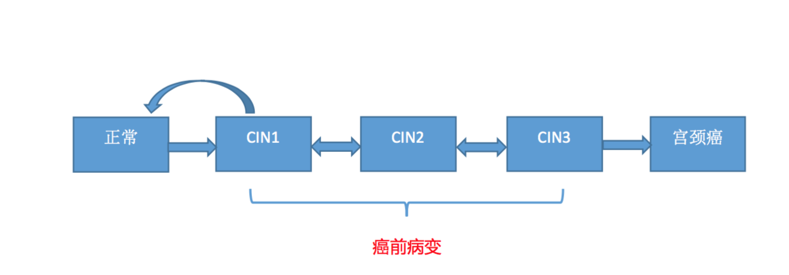

宫颈癌的自白：有些锅，我不背
Hi，姑娘们，我是宫颈癌，是你们口中的女性健康杀手。或许你没见过我，但听到我的名字也足以让你闻风丧胆。可是，我也很“委屈”，我也很“无辜”呀！不是洗白，今天我们就来聊一聊，剥夺了无数女性的生命，真的都是我的原因吗？
首先，我不会无缘无故找上你们的，谁让你们先发出了“喜欢我”的信号呢？
HPV感染：高危型HPV对我有着强大的吸引力，它是导致我与你相遇的罪魁祸首，尤其是HPV16和HPV18。
性行为：如果你初次性生活过早（＜16岁）、性生活活跃、多个性伴侣、性伴侣又有多个性伴侣的话，就有可能吸引我来到你身边哦~
口服避孕药：如果你长期口服避孕药的话，也会增加我看到你的几率。
吸烟：吸烟会降低你的免疫力，当我接近你时，你会无力抵挡。
以上这些，都有可能将我吸引至你身边。
前面有说到，高危型HPV是导致我与你相遇的罪魁祸首。你知道吗？有国外研究表明，女性在她一生中发生至少一次HPV感染的几率是85%，而且感染HPV的女性80%以上是在45岁以前感染的！性活跃的年轻女性HPV感染率最高，其中，在我国城市里15~24岁女性HPV感染率最高。一项基于中国17个研究、共30,207例女性的数据分析显示，15~24岁城市女性的HPV感染率高达18.7%！
发生HPV感染的概率高，也就注定了我与姑娘你相遇的几率也高了很多。但其实，要来到你身边，也不是一件容易的事情，这其中还有漫长的路要走……
在我来到你身边之前，你的身体里会先产生一些变化，我们称它为宫颈癌的癌前病变（CIN），它是由良性病变到恶性病变的中间状态，在某些因素的作用下有可能会变成恶性肿瘤。但如果能及时处理掉，CIN就能恢复到正常状态了。所以，CIN是一种可逆改变的状态。

从宫颈病变到我来到你身边大约需要10年的时间，在这期间，我相信你会有时间、有办法、有能力去及早发现癌前病变，及时阻断癌前病变的发展。如果你能早点筛查、早点预防的话，我又怎么可能跨越重重阻碍来到你身边呢？所以，千万不要说我没有给过你生存的机会哦~
Ref：
刘湘云。宫颈癌病因学研究进展。齐齐哈尔医学院学报, 2002, 23(3): 346.
2 Chesson HW, Dunne EF, Hariri S,et al. The estimated lifetime probability of acquiring human papillomavirus in the United States. Sex Transm Dis. 2014;41(11):660-4.
3 Fang-Hui Zhao, Adam K. Lewkowitz, et al. Prevalence of Human Papillomavirus and Cervical Intraepithelial Neoplasia in China: A pooled analysis of 17 Population-based Studies. Int J Cancer. 2012 ; 131(12): 2929-38.